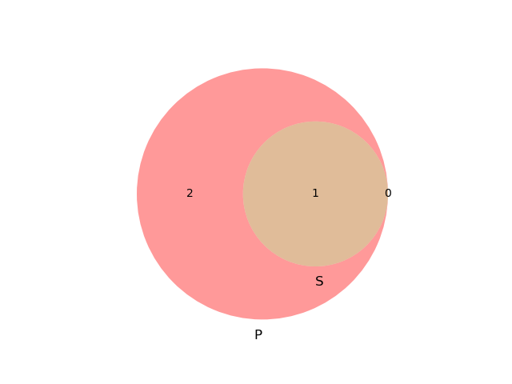
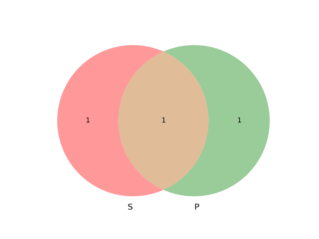
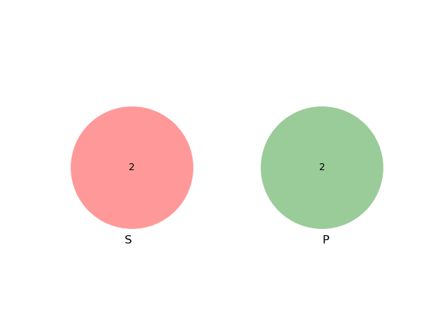
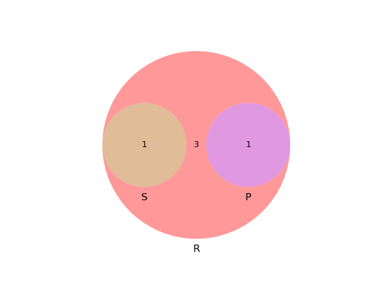

1 逻辑学介绍
1.1 事实错误与逻辑错误
上帝在第三天创造了太阳。 这里的“天”计量是从太阳光照得来的。 那么三天前太阳是存在又不存在的。 逻辑错误一定不是可辩解的。
1.2 例题
1，2，3，4，5五个人，戴着白帽子黑帽子，白帽子只说真话，黑帽子只说假话。 他们说的五句话。 1说:我看见三顶白帽子一顶黑帽子; 2说:我看见四顶黑帽子; 4说:我看见一顶白帽子三顶黑帽子; 5说:我看见四顶白帽子;
| 1 | 2 | 3 | 4 | 5 |
|---|---|---|---|---|
| S | -S | -S | ||
| X | S | |||
| X | X | S | X | |
| F | F | T | T | F |
1.3 三段论逻辑
反例解释 1.结构相同 2.前提真而结果假
1.4 选择观察效应
2 引言:大师与智者
2.1 半费之讼
2.2 苏格拉底
2.3 “逻辑学之父”:亚里士多德
2.4 公孙龙
2.5 邓析
2.6 名学辩学大成:墨子
3 思维形态与语言单位
| 词项 | 词语名词性词组 |
| 命题 | 语句（因果性语句除外） |
| 推理 | 因果性语句，句组 |
3.1 思维形式
同一类型得思维形态所共有 得具有得思维形式就称作该思维的逻辑形式，又称为形式结构，简称公式 其中保持不变的是逻辑常量，变化的是逻辑变量。
3.1.1 第一组 （命题）所有S是P
- 所有商品都是有价值的。
- 所有物质都是可分割的。
- 所有发展都是由事物内部矛盾引起的。
3.1.2 第二组 （命题）如果p,那么q
- 如果为人民利益而死，就比泰山还重。
- 如果一个人得了肺病，那么这个人就会发烧。
- 如果出现了阶级，那么就会出现国家。
3.1.3 第三组 （推理，因果关系）所有M都是P;所有S都是M
- 所有学生都应该知书识礼。 所有M都是P
- 所有大学生都是学生。 所有S都是M
- -——————————
- 所以，所以大学生都应该知书识礼。 所以，所有S都是P
3.2 常用逻辑符号
3.2.1 逻辑常项
定义：指的是一个逻辑形式中具有确切含义，其含义始终保持不变得部分 如下：“ 如果…… 那么 ……"
3.2.2 逻辑变项
定义：指一个逻辑形式中没有确切含义，可用不同词项或者命题进行替换的部分。 如下：S,P等等。
3.2.3 词项变项
通常用 大写字母 ：S,P,M表示。
3.2.4 命题变项
一般使用 小写字母 表示：p，q，r，s。
4 词项
4.1 什么是词项？
词项 ：反映对象本质的思维形态，是充当命题主项和谓项的概念。 词项说明的是 类 本质属性 是决定一类事物之所以成为该事务并与其他事物相去别的属性。
4.2 词项的内涵与外延
4.2.1 什么是内涵
词项所反映的对象的本质属性
4.2.2 什么是外延
词项的范围
4.2.3 词项不明确
X与2X哪一个大
4.2.4 公孙龙“白马非马”
从内涵的角度去区别：白与马 外延的角度：白马与马的外延不同
4.3 常见的词项问题
4.3.1 扩大概念或者泛化的问题
高晓松
4.4 明确词项的方法(词项的分类)
4.4.3 正词项与负词项
名词是正词项 只有有“非”词谓的词项才为负词项
4.5 联言推理
4.6 词项间的逻辑关系（欧拉图）
4.6.1 全同关系
S与P具有全同关系，指S和P的外延完全相同（仅仅为外延，不包括内涵）
from matplotlib import pyplot as plt
from matplotlib_venn import venn2
venn2(subsets=[0,0,1],set_labels=('S','P'))
plt.savefig('image/quantong.png')
return 'image/quantong.png'

4.6.2 真包含于关系
from matplotlib import pyplot as plt
from matplotlib_venn import venn2
venn2(subsets=[2,0,1],set_labels=('P','S'))
plt.savefig('image/zhenbaohanyu.png')
return 'image/zhenbaohanyu.png'

4.6.3 真包含关系
from matplotlib import pyplot as plt
from matplotlib_venn import venn2
venn2(subsets=[2,0,1],set_labels=('S','P'))
plt.savefig('image/zhenbaohan.png')
return 'image/zhenbaohan.png'
4.6.4 交叉关系
from matplotlib import pyplot as plt
from matplotlib_venn import venn2
venn2(subsets=[1,1,1], set_labels=('S','P'))
plt.savefig('image/jiaocha.png')
return 'image/jiaocha.png'

4.6.5 全异关系
from matplotlib import pyplot as plt
from matplotlib_venn import venn2
venn2(subsets=[set([1,2]),set([3,4])], set_labels=('S','P'))
plt.savefig('image/quanyi.png')
return 'image/quanyi.png'

4.6.6 矛盾关系

4.6.7 反对关系
from matplotlib import pyplot as plt
from matplotlib_venn import venn3
venn3(subsets=(set([1,2,5,6,7]),set([1]),set([2])),set_labels=('R','S','P'))
plt.savefig('image/maodun.png')
return 'image/maodun.png'
5 简单命题
5.1 周延性理论
5.1.1 主项
全称命题的主项都是周延的。 特称命题的主项都是不周延的。
5.1.2 谓项
只有否定命题的谓项是周延的。
5.2 简单命题
定义：自身不包括其他命题的命题。逻辑变项一般是概念变项
5.2.1 关系命题
对象之间具有或者不具有某种关系的命题
5.2.2 性质命题（直言命题）
断定对象具有或者不具有某种性质的命题。
- 哥白尼创立日心说
5.2.3 联言命题
5.2.4 模态命题
包含“必然”，“可能”，“一定”，“知道”，“应当”，“允许”等模态词的命题。 一种可能，哪怕是非常大的可能性，都不是必然性。
5.2.5 非模态命题
5.3 同素材命题之间的真假命题制约关系
- 矛盾关系 既不能同真，也不能同假。
- 反对关系 不能同真，但是可以同假。
- 下反对关系 不能同假，但是可以同真。
- 差等关系 既不同真也不同假。
5.3.1 利用矛盾关系解决逻辑题
矛盾关系中必定有一句是正确的
6 推理
6.1 推理有效性
- 无效的形式可以推出任何结论
- 假的前提可以推出任何结论
6.2 性质直接判断推理
6.2.1 形式有效的推理
- 对当关系推理(同主谓):使用命题制约关系来判断
- 判断变形推理(同主谓):使用反对关系+反谓项。
- 换位法推理(同主谓):使用相同的主谓(或者下位转化)，不变量项，但是原来不周延的项不能周延。
6.3 三段论
6.3.1 形式有效性
- 必须有三项
- 中项至少周延一次
- 前提中不周延的，结论不可周延
- 两个否定前提推不出
- 前提有否定则结论为否定
- 两个特称命题推不出
- 有特称前提，结论也是特称
6.4 关系推理
- 自返关系推理
- 反自返关系推理
- 对称关系推理
- 反对对称关系推理
- 传递关系推理
- 反传递关系推理
7 复合命题及其推理
复合命题的逻辑等值推理 ¬(A ∧ B) →
7.1 符号→ ← ↔ 相关关键词
7.1.1 充分条件假言命题→
7.2 选言命题
7.2.1 相容选言命题与不相容宣言命题
相容选言命题可以有多个选言支为真 不相容则只能为单一真
7.2.2 相容选言命题推理
(p ∨ q) ∧ ¬ p → q (否定肯定式) 相容选言命题只能使用否定肯定式推理，而且要求选言肢穷尽
7.2.3 不相容选言命题的推理
(p ∨ q) ∧ ¬ p → q (否定肯定式) (p ∨ q) ∧ p → ¬ q (肯定否定式)